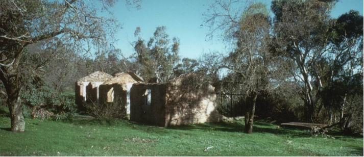
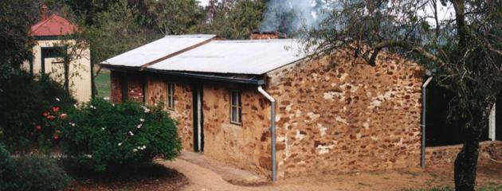

The Barossa Goldfields Historical Society is a group of community minded volunteers who work to preserve local area history and share it with the wider community and future generations.
31st July 1987
The inaugural meeting of the Barossa Goldfields Historical Society is held on the property of local identity Bob Swarbrick. He organises a marquee and invites the entire local neighbourhood.
1991

Bowden's Cottage – This cottage ruin earmarked for demolition by
the National Parks, is located on the land that forms the Para Wirra Recreation
Park. The BGHS apply for the right to rebuild and repair this cottage. After
twelve months of negotiations, a 10 year lease is obtained from the National Parks
and the BGHS have legal tenure.
16th June 1992
First official day of cleaning up the grounds and preparing to rebuild Bowden's Cottage. Every Tuesday morning, without fail, members of this group would meet at this ruin to continue restoration work.
August 1992
The roof is put on over the first room, now used as our museum / display room.
January 1993

The roof goes on over the main meeting room.
October 1992
BGHS members hold their first Re-enactment open day at the Victoria Hill Rush Site. The day is an educational fun day and a fundraiser for the group with members dressed in period style clothing giving gold panning demonstrations and guided walks, and refreshing visitors with billy tea and camp oven damper served with local native current jam.
2001
With the expiration of the 10 year lease plus difficulties gaining public liability insurance the BGHS becomes a group under Friends of Parks Inc.
Iris Stephenson (nee Bowden) lived in this cottage as a young girl. She tells of how her family came to the Gawler / Barossa Goldfields area and how they made Bowden's Cottage their home. Iris's parents, Jack and Vera Bowden were pioneers. Her mother was a nursing sister in Sydney and met her husband (Iris's father) after the Boer war. She decided to leave Sydney, marry this man and join him on Paratoo Station on the Broken Hill Line. Her fellow nursing friends gave her six weeks in the bush but even after 40 years she never looked back. Life in the bush was nothing but hard work and struggle. Iris's mother had 3 other children, 2 girls and a boy, but Iris was a late comer, "an afterthought". It was a harsh upbringing, with much hard work and heartache; little food, no electricity, and no running water but, despite the hardships, Iris recalls a contented life. When Iris's father was injured in a horse and cart accident his legs were crushed and he was no longer able to manage Paratoo station. In 1930 the family moved to Gawler to seek medical treatment for his damaged limbs. When they first moved to Bowden's Cottage from Gawler in 1931 it consisted of an old tent and a one-room stone dwelling. Despite the confines of the Cottage, it felt good to get out of town and back into the open spaces surrounded by the bush, even if it meant cooking meals in a camp oven over an open campfire.
Iris could drive since she was 10 years old, back on the station, but when they moved to Gawler/Barossa Goldfields she was considered too young. When her father became too sick to drive, the Bowdens sold their car. Iris had to walk from Bowden's Cottage to Williamstown or Gawler to get their supplies. She would walk to Gawler every Saturday and carry goods home in a sugar bag. It was a hard slog home up the Hutchinson Hill laden with goods. Even when the grocer from Williamstown began deliveries to their cottage, Iris still walked to Gawler every Saturday for additional supplies. Facilities for washing were primitive; Iris's father bought an old copper for boiling the clothes in and built a little shelter over it for protection. Initially clothes were rinsed in buckets until an old trough was enlisted for the task. Despite the apparent hardships, Iris's mother never complained; although appearing frail she was obviously a very strong woman. She lived to be 96 and had a perfect memory.
When extensions to the cottage commenced, Iris and her father would spend one day chipping stones to make bricks. The next day Iris would cart water and the sticky yellow clay that would be used to bind the stone for the walls. Iris used two kero buckets supported by a yoke made for her by her father for carting the water. Iris's father would tell her to only half fill the buckets but Iris would always try to carry the buckets filled to the brim to save time. Once water and stone were collected the following day would be devoted to building. Both Iris and her father would be up early mixing clay and laying stone to build the extra rooms. Once the walls were complete, Iris was sent by her father to cut wood for the roof – "got to have straight mallee, good and strong, no dog's feet" he would say. She had to cut away one side of each of the mallee lengths to straighten them for affixing the roof to, often striking her ankle with the axe as she worked. Once six or seven lengths of mallee had been prepared she would then drag them back home in preparation for roof building the following day.
At the tender age of only 14 to 16 years, and with little help from her incapacitated father, the effects of such heavy manual labour were to ultimately take their toll and today Iris suffers considerably from back pain as a result.
Iris's father died when she was 20. Iris Bowden married Norm Bain in July 1938 and continued to live in Bowden's cottage with her mother. Iris and Norm had 3 children - Gary, Rosemary and Monica. Bain became sick and died when he was 50.
Iris then married Mr. Stephenson and moved to Gawler. Iris Stephenson, now 95, still lives in Gawler.
In 2000, Iris was honoured as a torchbearer in the torch relay for the Sydney Olympics in recognition of her contributions to the district with 'riding for the disabled' and local pony clubs. Iris lit the cauldron in Gawler.

Iris Bain - Stephenson (nee Bowden) – October 1994
Pre 2000 History
Early History
Exactly when the gaol cell was brought to Williamstown, or if it was in fact actually first used in the Goldfields, cannot be confirmed. However, long time residents Doll Hissey and Iris Stephenson believe that it was located in the Goldfields. It could have been built and used around 1885 – 1900 and is thought to have been moved to Williamstown around 1900 - 1910 as extra storage space for non law-abiding timber cutters. The Timber Mill in Williamstown commenced operations in the 1840's but probably benefited from an increase in timber cutting activity in the early 1900's to meet the demands for building materials destined for the Port Adelaide wharves and the railways.
Prior to it's current location next to our museum, the cell was originally located behind the "old" Williamstown Police Station which was sited opposite the Williamstown School until the 1950's. It was then relocated to the current (proposed to be sold) station around 1952? or 1957? It was probably shortly after this (1958 – 1959) that the concrete cell was built and the somewhat substandard corrugated iron cell decommissioned.
The Relocation and Renovation
December 1999
Gaol Cell sits behind Williamstown Police Station in Victoria Street. The gaol cell has stood on this site since the 1950's. Although many older locals refer to it as the Old Barossa Goldfields Gaol Cell, little is known of its actual history prior to its being relocated to Williamstown. In December 1999, Barossa Goldfields Historical Society (BGHS) Chairman, Bob Swarbrick was speaking to Senior Constable Chris Gill of Williamstown Police when the topic of the Barossa Goldfields Gaol Cell was raised. Chris Gill mentioned to Bob that the Police Station was to be closed and sold and asked whether the BGHS would like the old cell with a view to returning it to the Goldfields.
January 2000
Bob Swarbrick rings the Department of Housing and Construction to determine ownership of the cell and seek permission to claim and relocate. He finds it is listed in the Police Inventory.
January 25th 2000
On behalf of the BGHS, Bob Swarbrick writes to Chief Inspector Darryl Ingham seeking permission to claim the gaol cell.
February 1st 2000
Chief Inspector Darryl Ingham responds favourably. He advises that he will approach the Police Commissioner on behalf of the BGHS with regard to its request to claim the cell.
February 2000
On behalf of the BGHS, Bob Swarbrick applies to Barossa Council for a grant to relocate and renovate the gaol cell.
August 16th 2000
Barossa Council Community Assistant Grant for $700 received.
November 2000
Site preparation at Barossa Goldfields commences. BGHS members prepare site and Anthony Jaensch uses dozer blade to clear and level site.
November 21st 2000
Bob Swarbrick and Steve McDonald prepare boxed footings for the slab.
November 28th
Kaylene Jaensch, Ted Hughes and Bob Swarbrick mix concrete and lay the slab for gaol cell. Joan Woolford keeps a photographic record of activities.
January 31st 2001
Moving day. BGHS members Bob Swarbrick, Ted Hughes, Anthony & Kaylene Jaensch, Steve McDonald and Joan Woolford gather at the Williamstown Police Station with local farmer John Schultz's truck. Using jacks, ropes and chains the gaol cell is levered up, tilted over onto the truck tray and then pulled onto the truck by 4WD. The cell is then tied down and Bob is given the onerous task of driving the truck slowly and steadily back to the BGHS grounds. Upon arrival, more ropes, chains and a tractor are employed to drag the cell back off the truck and tip it onto the prepared concrete slab. Mel Craig and Heather Robb arrive in the fading light to witness success armed with a celebratory pizza meal.
February – October 2001
Renovations. BGHS members work on repairing the old cell ready for its official launch as another local history attraction on their Open Day on 21st October 2001. The corrugated sides are removed and the rotted and white ant eaten timber support beams are repaired and replaced. The iron is trimmed and tidied and flashing is placed around the base before the sides are nailed back in place. The internal woodwork, including the flooring, is repaired or replaced. The old paint is removed with wire brushes and the whole cell repainted. Wattyl paint colours are chosen: 'Colourbond Tuscan Red' for the roof and heritage colours 'Drab' for the walls, and 'Deep Brunswick Green' for the trim.